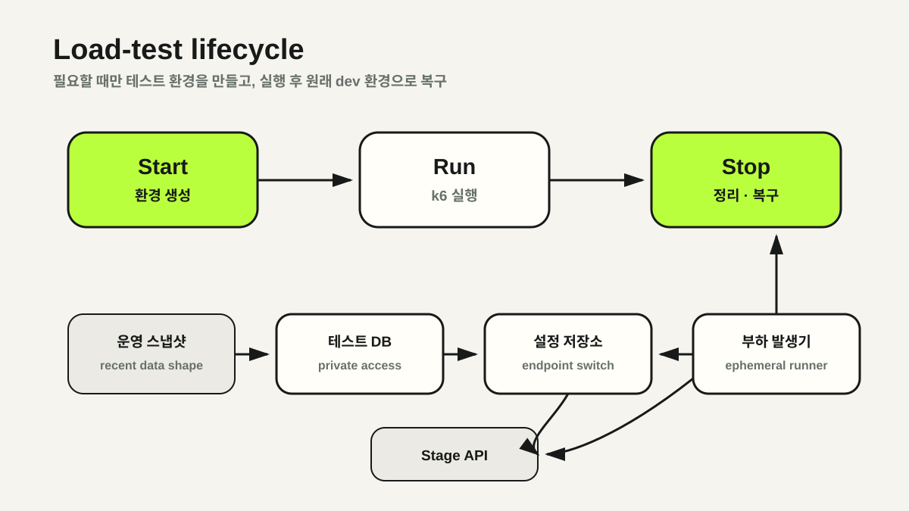

환경 준비가 테스트보다 어려운 구조
기존 dev·prod 설정은 application.yml과 secret 서브모듈에 흩어져 있었습니다. 부하 테스트를 시작하려면 DB endpoint와 profile을 직접 바꾸고, stage 서버를 재기동하고, 테스트 데이터를 준비해야 했습니다.
이 과정은 약 20분이 걸렸고 순서 하나를 놓치면 stage가 잘못된 DB를 바라보거나 설정 충돌이 발생했습니다. 작은 로컬 DB는 운영의 데이터 분포를 반영하지 못하고, 운영 DB를 직접 대상으로 삼는 것은 안전하지 않았습니다.
Parameter Store 기반 설정 외부화
첫 단계는 실행 환경과 설정값의 분리였습니다. DB endpoint, 계정 정보, JWT secret과 profile별 값을 AWS Systems Manager Parameter Store로 옮겼습니다.
/solid-connection/common/...
/solid-connection/dev/...
/solid-connection/prod/...
/solid-connection/loadtest/...애플리케이션은 spring.config.import와 Spring Cloud AWS를 통해 현재 profile에 맞는 경로를 읽습니다. 배포 workflow에서는 secret 서브모듈 checkout을 제거하고, EC2 IAM Role과 DefaultCredentialsProvider 체인으로 설정과 S3에 접근하도록 변경했습니다.
- 환경별 설정 경계의 명시적 분리
- 장기 access key와 secret key의 애플리케이션 설정 제거
- 서브모듈 commit hash 불일치와 수동 동기화 제거
dev,loadtest복합 profile을 통한 선택적 설정 오버라이드
운영 스냅샷 기반 일회성 인프라
설정만 자동으로 바꿔도 테스트 DB가 운영과 너무 다르면 결과를 신뢰하기 어렵습니다. Terraform이 운영 RDS의 최신 자동 스냅샷에서 load-test RDS를 복원하도록 구성했습니다.
data "aws_db_snapshot" "latest_prod" {
db_instance_identifier = var.prod_rds_identifier
most_recent = true
snapshot_type = "automated"
}
resource "aws_db_instance" "load_test" {
snapshot_identifier = data.aws_db_snapshot.latest_prod.id
publicly_accessible = false
storage_encrypted = true
skip_final_snapshot = true
}RDS는 public 접근을 막고 prod·stage API 서버의 Security Group에서 오는 MySQL 트래픽만 허용했습니다. 생성된 endpoint는 loadtest Parameter Store 경로에 기록되어 stage 애플리케이션이 별도 파일 수정 없이 새 DB를 바라볼 수 있습니다.
k6는 stage 서버와 분리한 전용 EC2에서 실행했습니다. 측정 대상과 부하 생성기가 CPU·메모리·네트워크를 경쟁하지 않게 하고, 실행기는 암호화된 볼륨과 IMDSv2 강제 설정을 사용한 뒤 테스트 종료 시 제거합니다.
Start · Run · Stop 책임 분리
환경 준비와 테스트 실행, 복구는 실패 지점과 반복 주기가 다릅니다. 하나의 긴 스크립트 대신 세 workflow로 책임을 나눴습니다.
- Start — load-test RDS와 네트워크 자원 생성, Parameter Store 갱신, 선택적 stage profile 전환
- Run — 전용 EC2 생성, SSM으로 k6 파일 동기화, VUs·iterations·duration 입력에 따른 실행
- Stop — stage의 dev 설정 복구, load-test RDS와 부하 발생기 제거
세 workflow는 같은 concurrency group을 사용하고 실행 중인 작업을 자동 취소하지 않도록 했습니다. Start가 리소스를 생성하는 중에 Stop이나 다른 Run이 끼어드는 경쟁 상태를 막기 위한 선택입니다.

SSH 없이 SSM으로 실행
GitHub Actions는 OIDC로 AWS Role을 획득하고, 부하 발생기 EC2에는 SSM RunCommand로 접근합니다. 로컬 SSH key 경로와 실행자 환경에 의존하던 흐름을 제거했습니다.
workflow 입력은 셸 코드에 직접 삽입하지 않고 환경 변수로 전달한 뒤 Bash 배열의 인자로 추가했습니다. 원격 명령 JSON도 jq --arg를 통해 escaping했습니다.
env:
VUS: ${{ inputs.vus }}
MAX_DURATION: ${{ inputs.max_duration }}
run: |
args=(--vus "$VUS" --max-duration "$MAX_DURATION")
bash scripts/load_test/run_k6.sh "${args[@]}"실행 스크립트는 SSM 상태를 제한 시간까지 polling하고, trap으로 실패 시에도 부하 발생기 정리를 시도합니다. Prometheus remote-write URL이 있을 때만 출력 플러그인을 켜고 xk6와 extension 버전은 고정했습니다.
결과: 20분에서 2~3분
환경 전환 시간뿐 아니라 테스트의 재현 가능성도 개선됐습니다. 설정 외부화만으로는 현실적인 테스트 DB가 없고, 인프라 자동화만으로는 애플리케이션 설정 전환이 남습니다. 두 작업을 하나의 생명주기로 연결했을 때 비로소 부하 테스트가 반복 가능한 운영 작업이 됐습니다.
NEXT POSTAPI 요청 컬렉션에서 k6 부하 테스트를 생성하기 →